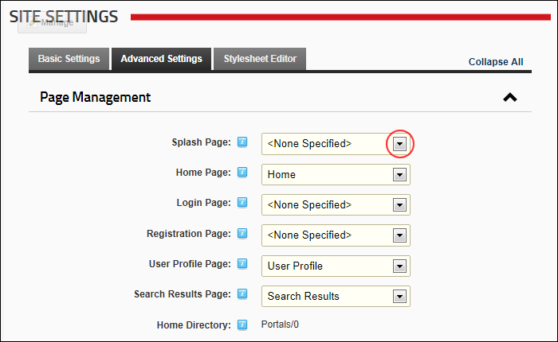
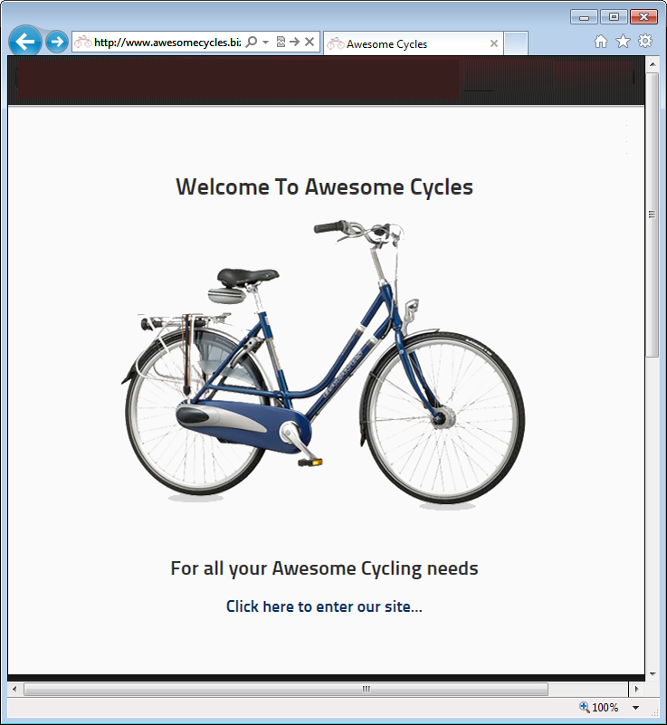

- To set the splash page, select the page name from the drop down list.
- To disable the splash page, select < None Specified > from the drop down list.
How to enable or disable a Splash page for this site. When a visitor first comes to the standard URL of your site, that is the main URL (E.g. http://www.awesomecycles.biz or http://www.awesomecycles.biz) rather than a specific page (E.g. http://www.awesomecycles.biz/ContactUs/tabid/103/Default.aspx) the Splash page is displayed.
A Splash page must be created by a Page Editor or an Administrator. The Splash page is typically not included in the site menu. The Splash page should include some form of redirection to one or more site pages. This can be done by adding a link to a site pages, or adding a Flash animation with an automatic redirect feature to the Splash page.


A Sample Splash Page